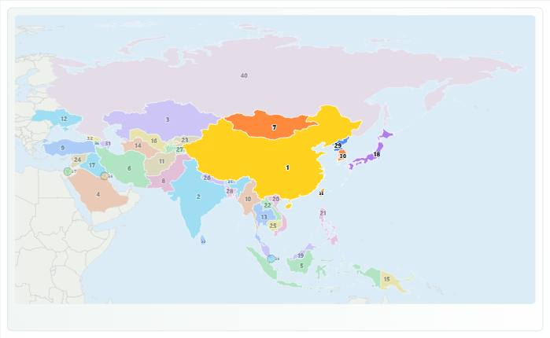
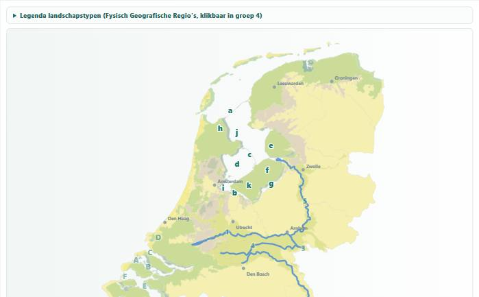
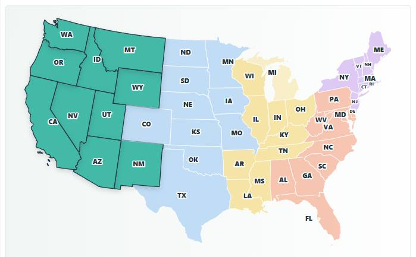

Topografie oefenen
Kies een spel, vul je naam in en oefen met klikken of typen op de kaart.
-

Landen in en rondom Azië
Oefen de landen van Azië per regio.
-

Nederlandse waterwerken
Zuiderzeewerken, Deltawerken, rivieren en landschappen.
-

VS staten oefenen
De 48 staten, in sets van 10.
Tip: op een telefoon of tablet kun je een spel via het menu van de browser op het beginscherm zetten.